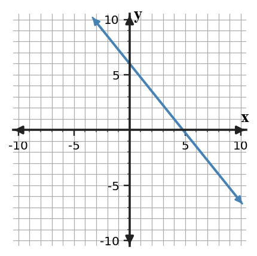

Start with what you can solve independently. Then find different classmates to compare reasoning or help with problems you have not completed. Record your own work and have each partner initial one problem they discussed with you.
In $y=-x^2+4$, identify the reflection and vertical translation.
Use the table to identify the reflection and stretch from $f$ to $h$.
| $x$ | -2 | -1 | 0 | 1 | 2 |
|---|---|---|---|---|---|
| $f(x)$ | 2 | 1 | 0 | 1 | 2 |
| $h(x)$ | -4 | -2 | 0 | -2 | -4 |
A student predicts that $y=4(x-1)^2-2$ is wider than $y=x^2$ because it is multiplied by $4$. Make a reasonableness argument to support or reject the prediction.
Synthesize an equation, key-point table, and graph description for a function made from $y=|x|$ by reflecting over the $x$-axis, stretching vertically by factor $2$, and translating right $1$ and up $3$. Explain how each representation shows every transformation.
Performance notes: Look for correct parameter reasoning, transformed key points, and a clear explanation of why the chosen representation is useful.
Identify $m$ and $b$ in $y=-4x+9$.
Write the slope-intercept form template and name what each letter represents.
| $x$ | 0 | 1 | 2 |
|---|---|---|---|
| $y$ | 8 | 11 | 14 |
Use the row where $x=0$ to identify the initial value.
Plan A costs \$20 plus \$5 per use. Plan B is shown by $y=8x+5$. Compare the starting values and slopes, then decide which plan is cheaper for $2$ uses.
| $x$ | 0 | 2 | 4 | 6 |
|---|---|---|---|---|
| $y$ | 9 | 15 | 21 | 27 |
Compare the table to $y=2x+11$. Which has the greater slope? Which has the greater starting value?
Use the graph and equation $y=-x+7$ to compare slope and intercept. Explain whether they could represent the same relationship.

Compare the scatter plot with the table. Decide whether one linear model could reasonably represent both and justify with trend and rate evidence.

| $x$ | 2 | 4 | 6 | 8 |
|---|---|---|---|---|
| $y$ | 16 | 27 | 39 | 50 |
Two school supply companies offer printing plans: Company A charges \$40 plus \$0.06 per page; Company B charges \$15 plus \$0.11 per page. Recommend a company for a $500$-page job and a $1000$-page job. Justify with equations or a table.
Does $(2,7)$ satisfy the equation $y=3x+1$?
Solve by substitution.
$$\begin{aligned}y=2x+1\x+y=13\end{aligned}$$
A student models a coin problem with $n+q=44$ and $5n+25q=6.80$. The student says the system is ready to solve because the money equation uses cents and dollars together.
Assess the reasonableness of the model, revise it if needed, and explain how the units affect the solution.
A club is choosing between two bus companies. Company A charges \$180 plus \$6 per student. Company B charges \$90 plus \$9 per student. A draft graph labels the intersection as $(30,270)$ but the written conclusion says “Company A is always cheaper.”
- Revise the written conclusion so it matches the model.
- Explain what each coordinate of the intersection means.
- State which company is cheaper for 20 students and for 40 students.